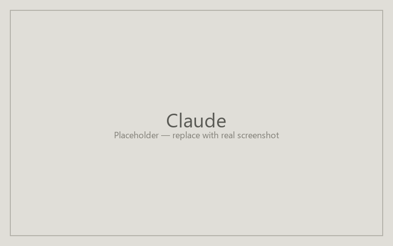

Building agents in Claude
Anthropic's Claude offers two paths for building shareable agents: Claude Projects (grounding + custom instructions, scoped to a workspace) and standalone shareable Claude.ai system prompts. Projects is the path most faculty want when a recipe specifies knowledge-base grounding. A Claude Pro or Team subscription is required for Projects; readers of a shared project need a Claude account.

Find the agent creation entry point
From claude.ai, look at the left sidebar for "Projects." Click "+ Create Project." If you don't see Projects, your subscription tier doesn't include it — check your account settings or fall back to a system prompt in a regular conversation.
Fill in the creation form
Give the project a Name (the recipe's Title) and a one-line Description. Open the project settings panel and paste the recipe's Instructions into the "Custom instructions" or "System prompt" field. For Knowledge Base, drag and drop files into the project's knowledge area — Claude supports PDFs, text, and code files up to the per-project size limit. Claude does not have a separate "Tools" toggle in the Projects UI; tool-using behaviors come from how the instructions are written.
Save and share your agent
Open the project's share dialog from the top-right menu. Add specific email addresses or generate a shareable link. Members can converse with the project's grounded knowledge and instructions but typically can't edit the configuration. Copy the link into your syllabus or LMS.
| Recipe field | Claude field |
|---|---|
| Title | Project name |
| Description | Description |
| Instructions | Custom instructions |
| Knowledge Base | Project knowledge |
| Tools | (implicit in instructions) |
Last updated: pending.